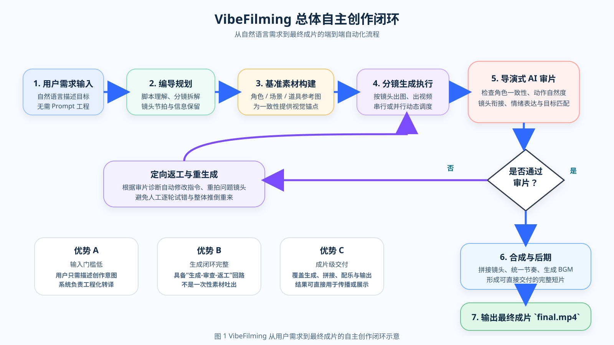
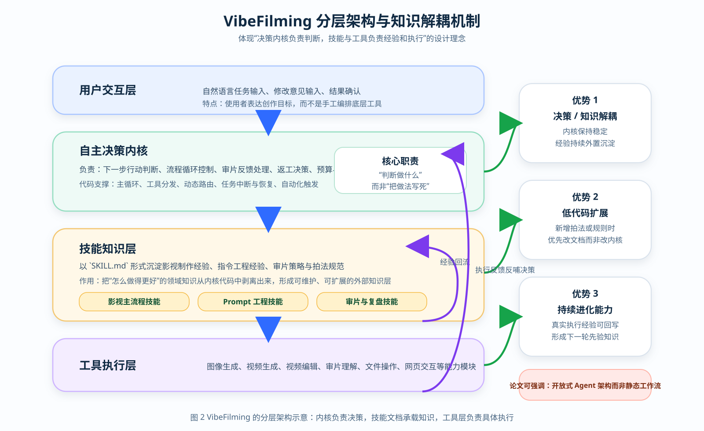
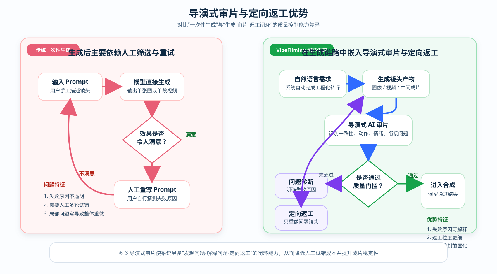
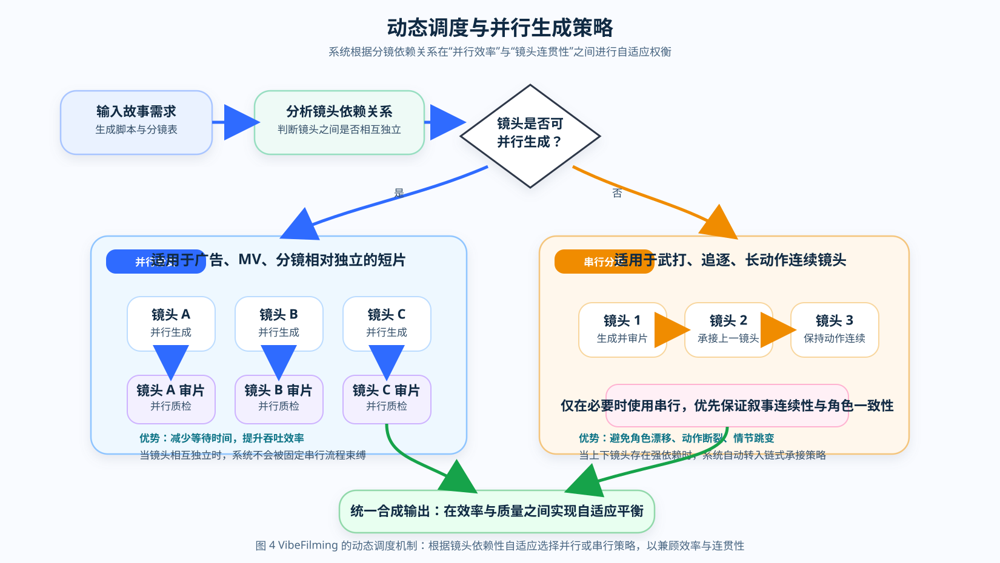
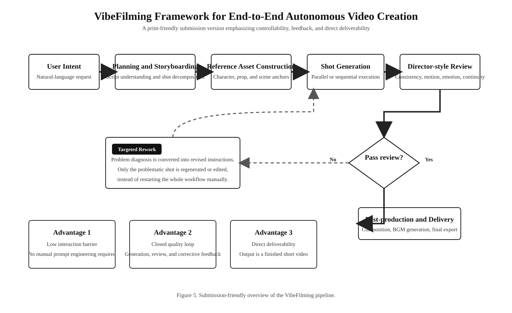
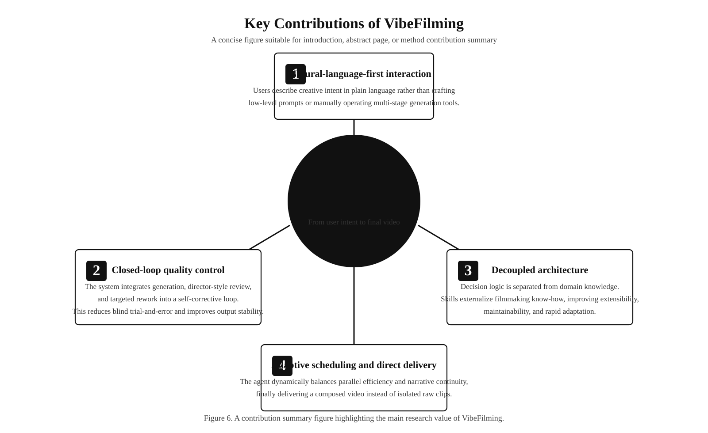
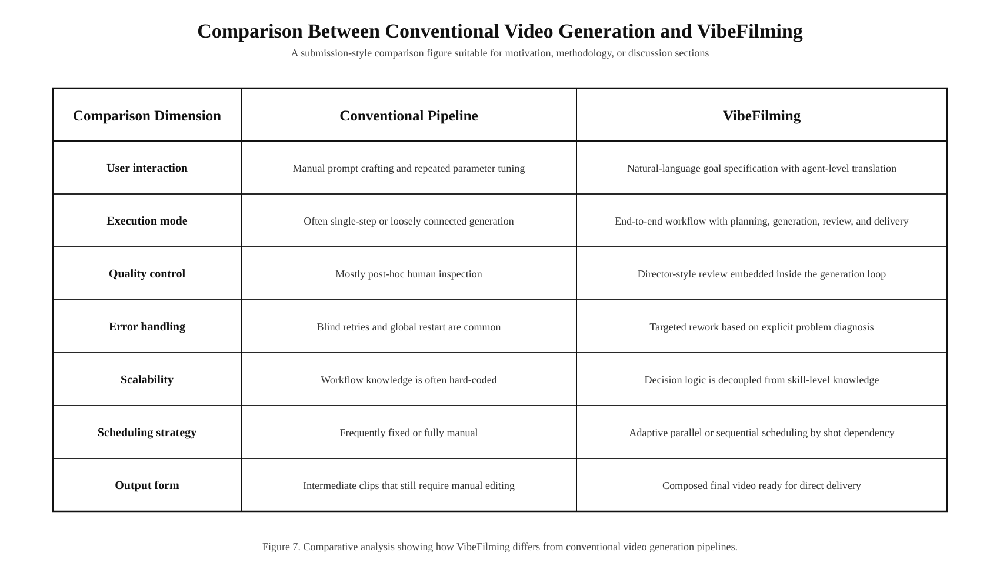
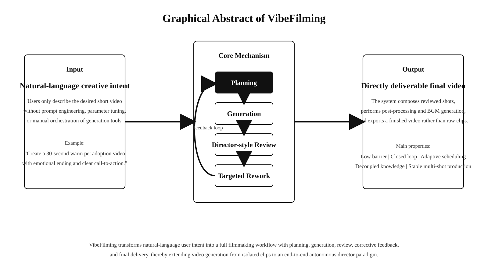

VibeFilming 论文插图预览
下面汇总了两组插图：前 4 张更适合中文论文、答辩或项目说明；后 4 张更偏英文投稿、黑白打印、图文摘要和方法对比场景。全部为 SVG 矢量格式，适合后续缩放、裁剪与二次编辑。
图 1 总体自主创作闭环
突出“自然语言输入 → 自主规划 → 审片返工 → 最终成片”的端到端闭环。

图 2 分层架构与知识解耦
突出决策内核、技能知识层与工具执行层之间的关系，以及系统开放扩展能力。

图 3 导演式审片返工优势
通过对比方式呈现系统在质量控制和返工粒度上的优势。

图 4 动态调度与并行生成
展示系统如何根据镜头依赖关系动态选择并行或串行策略。

图 5 投稿版总体框架（黑白）
更适合英文论文、黑白打印和期刊排版的克制版总览图。

图 6 投稿版方法贡献总结
适合放在引言末尾、方法贡献页或答辩概览页。

图 7 投稿版传统流程对比
适合放在方法对比、动机分析或讨论章节。

图 8 投稿版图文摘要
适合论文摘要页、投稿系统附图或答辩封面概览。
